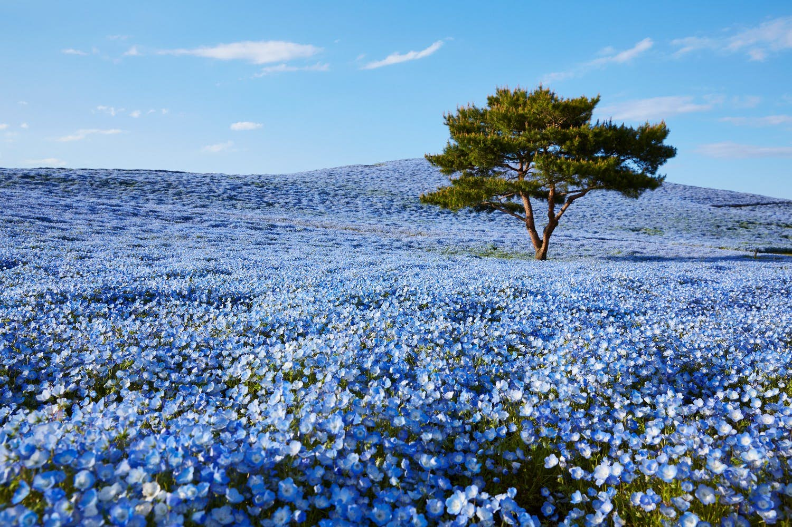
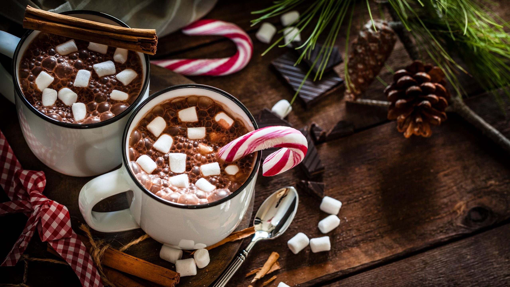
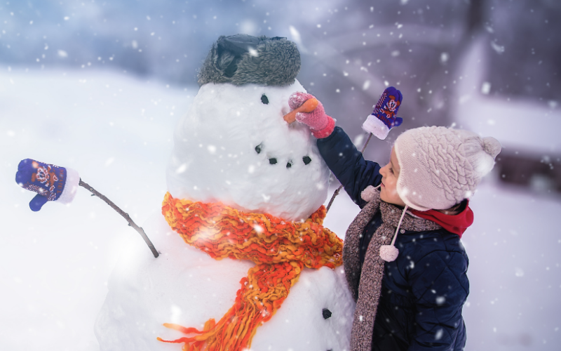
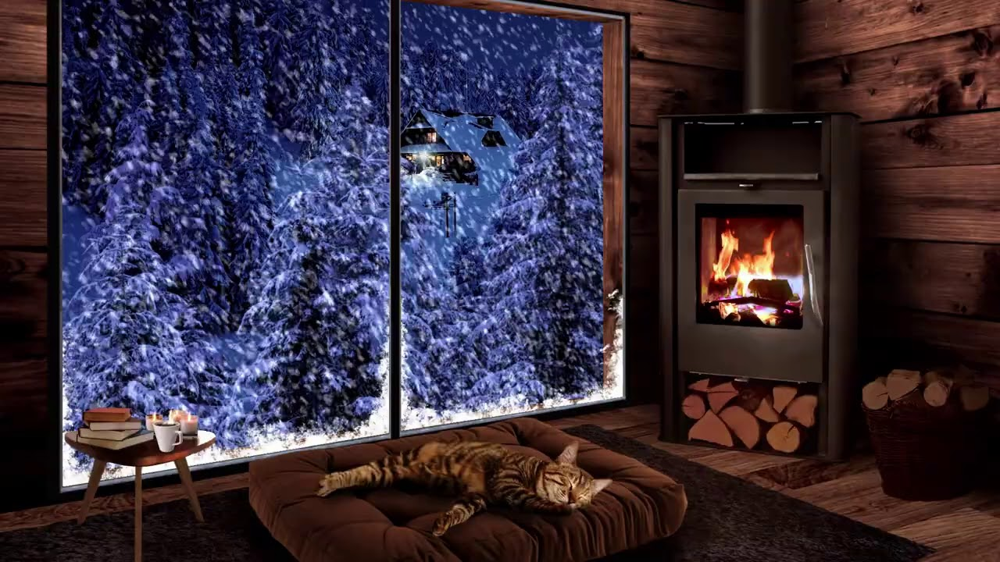
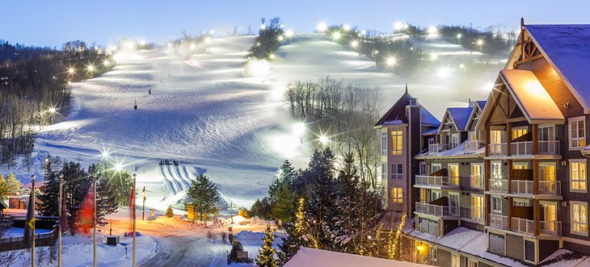

Summer is the best!
It is warm all around sometimes it may get a bit sweaty depending on the temperature, but it's better to feel warm constantly rather than cold.
During the summer, you can eat all kinds of fresh fruit since that is how they thrive. Cold beverages can be served without the need of worrying of
your body freezing up and also cools you down. Many flowers bloom, grasses grow and trees are greener. It allows for someone to enjoy the outside
and intake fresh air instead of being locked up at home all day. You can head to the beaches, get a nice tan, enjoy the summer air and also not worry
about school. It is the season that refreshes kids and even adults with vacations. There are more activites to enjoy with less stress and worries, it
is a season that easily appeals to others.



Winter is the best!
To each their own but some may prefer the cold more than the warmth. There are a wide variety of activities to do during the winter, ranging from
simply making snow angels, snowball fights to snowboarding or skiing at the hills and many more! Enjoy a cup of hot chocolate in front of the fireplace
or make a fort to stay in and watch movies all night long. Although many winter activities do require snow, there are other sports to watch indoors:
Basketball, wrestling, hockey and even indoor track! Enjoy the aesthetics of the winter snow fall often, or following a culture of spending the first
snowfall of the season with your lover means that true love will blossom and long-lasting! There are also plenty of family holidays like Christmas, Thanksgiving
and even Halloween to dress up! It is a season for the world to refresh itself and allow others to spend time with their family and friends rather than focusing
on staying outside in the heat.



